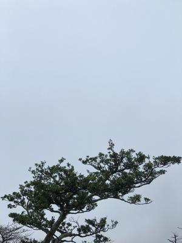
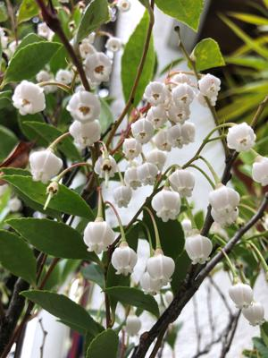

うるがいの話 ある日
最新: 延長不可【うるがいの話 ある日】とは 一日だけのプログです
『うるがいの話』の最新一日だけのプログで、通信料が少なく経済的だ。カニの画像をクリックすると全ての日付が載る『うるがいの話』サイトを表示します
|
|
【うるがいの話】 うるがい(ｳﾙｶﾞｲ urugai)とは、『もずくがに』の名前でとても大きくなります。 |
|---|---|
|
|
【カミマヤーの話】 猫のことを方言でマヤーといいます。カミマヤー（kamimayaa）とは、神の猫のことです。 |
|
【たながぁの音楽】 たながぁ（ﾀﾅｶﾞｰtanagaa）とは手長えびのことで、何種類かあり大きいのは車 エビぐらいになります。 |

|
【ぶながぁの話】 ぶながー(bunagaa)とは、赤い髪の毛、赤い身体、そして身長は１ｍ２０ｃｍ ぐらい、川の蟹を食べているの目撃された。場所は沖縄県国頭郡大宜味村のと ある村僕の隣近所に住んでいる爺さんから、聞いた話です。 |
|
|
【ギーマの話】 ギーマ(giima)とは、山原の里山に咲くスズランに似た、 花を付けます。実は食べられます、 気が付くと口の周りが紫になっています。 |
2022年03月27日 (日）延長不可
18:30

昨日の夜、明日は２週間前に借りた図書館の貸し出し期限である。あと２週間
延長するべとネットで延長できるか確認することにした。！、一冊が延長不可
になっている。仕方ないと雨が降るなか図書館へ返却する。その本は、邦題は
書きづらいので訳者あとがきをヒントに
原題はWhy Is the Penis Shaped Like That?
邦題は・・・。出版社は学術書も手がける化学同人、中身は科学エッセイ、装
丁もお洒落、しかし書店でレジに並んで買うには、相当勇気がいるのではない
かと思う。お買い上げいただいた方にまずはお礼を申し上げる。
ホー、でも還暦過ぎた人は周りは気にしないのである。本の内容は微妙な話ば
かりであるが、『ヒトラー問題で考える自由意志』の章で
あなたは極秘の軍事作戦の特使として、時間をさかのぼって一八九四年に行く
という任務を承諾する。ほかでもない幼い日のアドルフ・ヒトラーだ。さて、
どうする？、・・・
著者なら殺してしまうだろうと書いている。うむふむ、今のプーチンはと思っ
てしまう。著者のサイトを"http://www.jessebering.com"をみてみた（ページ
を翻訳させて）。愛犬が亡くなってサイトの更新が止まっている。
昨日の夕方、フト窓から外の様子をみると雨が上がっている。傘を持って外に
である、でも途中で空が暗くなり雨が降った。

１６時３７分 ビットコインの総資産 ￥１５、７８５↑